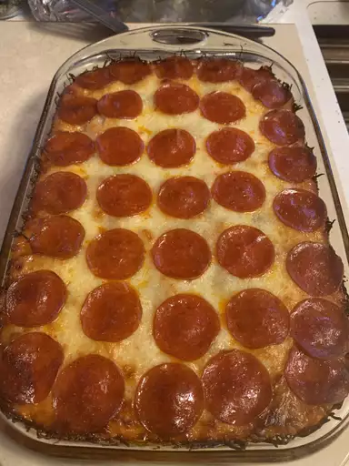

Description
Pizza
Ingredients
- ground beef
- mozzarella cheese
- spaghetti sauce
- sliced pepperoni
- sliced mushrooms
- sliced black olives
Steps
- Preheat oven to 375 degrees F (190 degrees C)
- Cook ground beef in a skillet over medium heat until no longer pink
- Fill a large pot with lightly salted water and bring to a rapid boil. Cook egg noodles at a boil until tender yet firm to the bite, about 5 minutes; drain.
- Combine beef, noodles, 1/2 mozzarella cheese, spaghetti sauce, pepperoni, mushrooms, and black olives in a large bowl